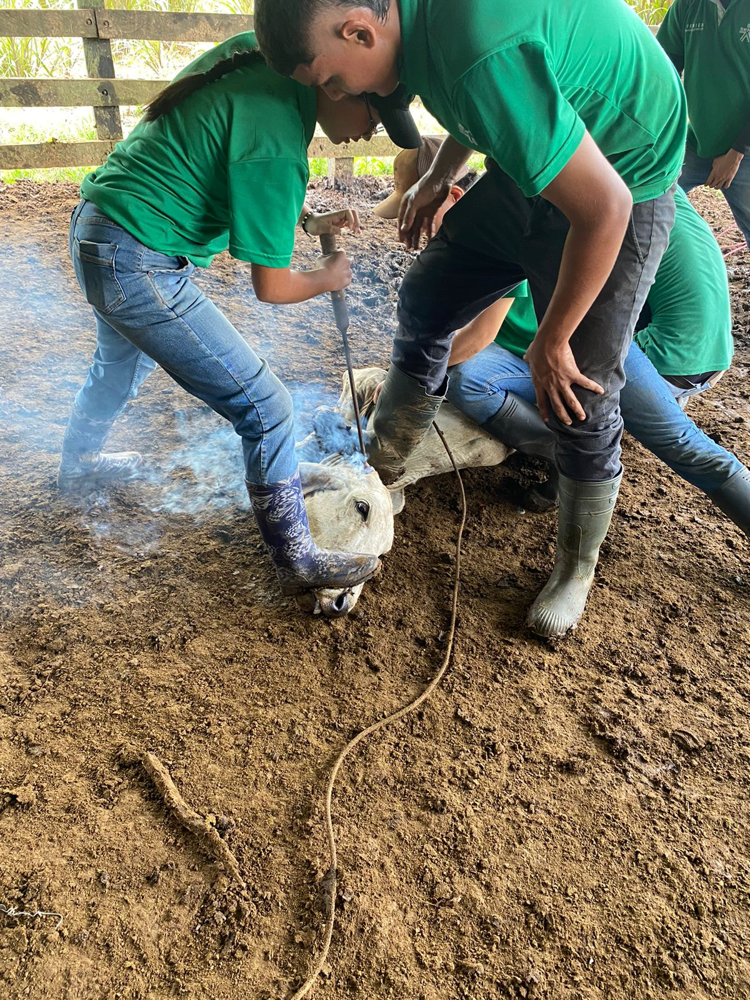

TE GUSTA LA GANADERIA Y DESEAS SER EL MEJOR ADMINISTRADOR DE EMPRESAS GANADERAS? Acá te ayudamos a lograrlo de manera efectiva, atrévete a explorar el mundo de la ganadería, como perfeccionarla y manejar una producción sostenible en medio de este trópico
Con el técnico en mayordomía de empresas ganaderas sostenibles del SENA, podrás cumplir con este objetivo, conseguir empleo y poder emprender como ganadero.
¿Qué aprenderás en el programa?
🌱 Alimentación Animal Sostenible
(conservación de forrajes/ manejo de praderas)
🍃 Como alimentar el ganado bovino de manera adecuada: reconociendo los pastos para alimentación animal y sus cualidades nutricionales
🌞 Conservación de forrajes:aprende de las alternativas de alimentación bovina para la época seca (verano) y como llevarlas a cabo (silo, heno, bloques nutricionales, etc.)
🌾 Manejo de praderas:reconocerás los procesos de siembra de pastos, desde la preparación de suelos, hasta la disposición de los pastos para alimentación animal
🌍 Sistema de Pastoreo Racional Voisin:aprenderás sobre el sistema de pastoreo racional Voisin y todas las mejoras que ha tenido desde su implementación
🐄 Sanidad Animal/Salud en el hato
Cuida la salud de tu ganado y mejora la producción.
💊 Enfermedades de los bovinos: : aprenderás a identificar los tipos de enfermedades que se pueden presentar en la producción ganadera y su tratamiento.
🔒 Prevención de la enfermedad en el hato: lograras identificar y apropiar los conocimientos necesarios para el manejo del hato y como evitar que se presenten enfermedades en los animales
📚 Vías de administración:aprenderás cuales son las vías de administración de medicamentos en bovinos y como aplicar cada uno de ellos
🗺️ Planes sanitarios:aprenderás como implementar un plan sanitario según la ubicación de la empresa ganadera
🏠 Instalaciones Pecuarias Adecuadas para la Ganaderia
Aprenderás sobre el correcto diseño de corrales para el manejo del ganado bovino.
📐 Diseño de corrales: Aprende a optimizar las instalaciones para manejo eficiente del ganado.
📊 Control de la Ganadería
Optimiza recursos y asegura la productividad de tu empresa.
📅 Sabrás como programar actividades de la producción ganadera:con el objetivo de sobrellevar momentos de dificultad económica en la ganadería y optimizar las funciones de los operarios en conjunto con los recursos disponibles en la empresa
🔬 Reproducción Bovina/mejoramiento genético
Mejora la genética de tu ganado con métodos avanzados.
🔍 Identificación de celo:aprenderás a reconocer los signos de celo de la hembra bovina y como saber cuando se debe poner las novillas a ciclo de reproducción
🛠️ Tecnologías:identificaras las herramientas tecnológicas disponibles en el mercado para la identificación de celos y la cubrición de la hembra bovina
🧬 Mejoramiento genético:realizarás la técnica de la inseminación artificial sabiendo como hacer los cruces genéticos adecuados según el objetivo de la empresa ganadera con el fin de optimizar la producción
🧪 Bioseguridad en la finca ganadera
Asegura la salud pública con prácticas ganaderas responsables.
📋 Normativa nacional:Conocerás la normativa nacional establecida para el correcto funcionamiento de la empresa ganadera sin poner en riesgo la salud pública

🌳 Creación de sistemas silvopastoriles
Implementa técnicas sostenibles para mejorar la salud del suelo.
🌲 Establecimiento de sistemas:Aprenderás a establecer sistemas silvopastoriles con el fin de mantener la salud del suelo y mejorar la producción de la empresa ganadera por medio de los diferentes estratos de los que se compone
🥛 Manejo del Hato Lechero
Producción láctea de calidad y sus derivados.
🪣 Ordeño:• Aprenderás como ordeñar tanto de manera manual, como en maquina de ordeño, manteniendo condiciones sanitarias para mantener una excelente calidad de la leche, además de los procesos para obtención de subproductos derivados de la leche.
🎓 Con la obtención de este técnico
podrás continuar con la cadena de formación en el SENA, con el tecnólogo en gestión de empresas agropecuarias o el tecnólogo en gestión de empresas ganaderas; para luego continuar con la carrera profesional en: